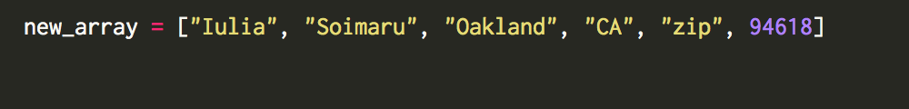
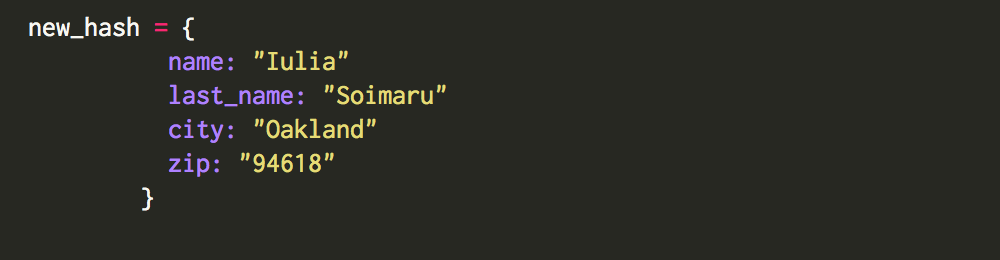
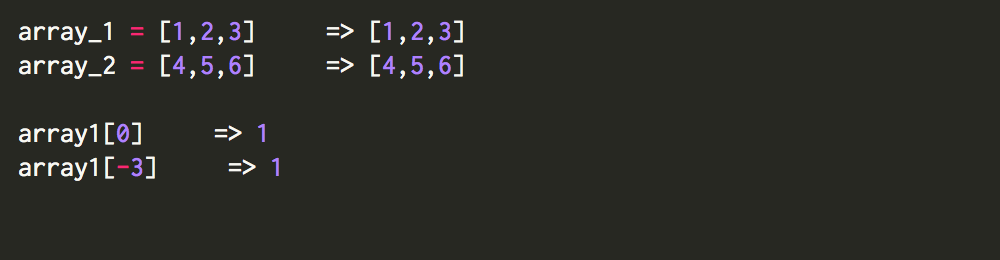
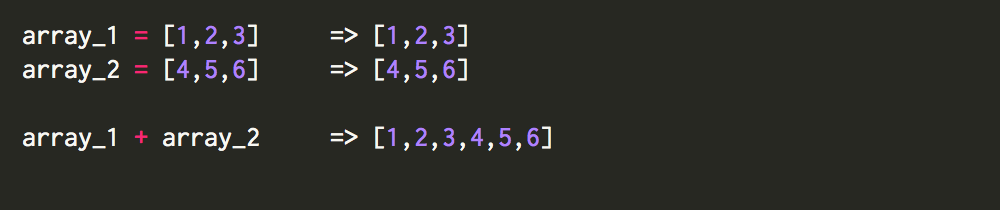
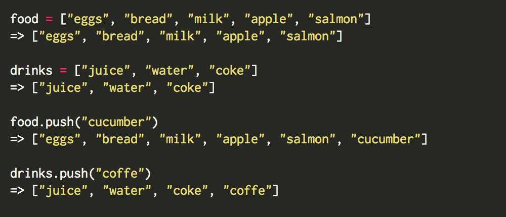
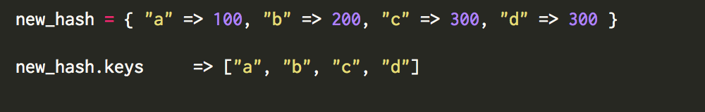
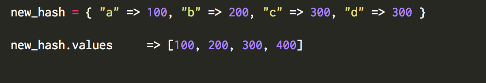
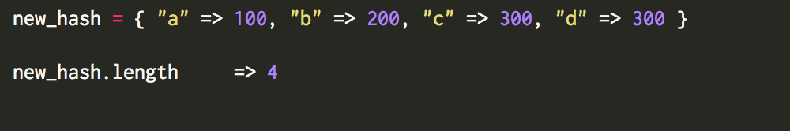
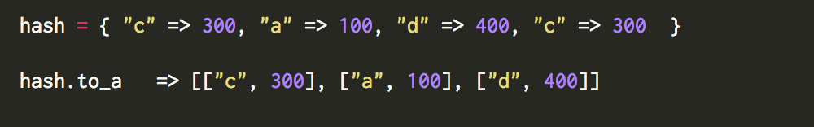

Array - is a data structure that works as a collection. In Ruby the collection can contain Objects, Classes and I would say anything. In other words I can say that array - is a container for data, were each element is an object, that has his own index number, that starts with [0]. All elements are stored in brackets [ ]. If you want to create new array, you can do it by writing “Array.new” 
Hash - is a container structure as an array, that keeps different kinds data. The difference is that we are not getting data by it’s position or index, we store the data in something that we call “key”. Each key refers to the value. Keys mostly are going to be: strings, symbols or numbers. All elements are stored in curly brackets { }. If you want to create new hash, you can do it by writing “Hash.new”sage. 
Because everything in Ruby is an object, everything has “abilities” that we call methods. You can think about methods as a “skills” that every object has. No let’s see how to use Arrays and Hashes, we will go over some of the basic methods to review how everything works.
Arrays:
If I sent in 0 as an index for first array, it should return us number 1, if I sent a negative number like -1, it starts counting from the end, and will return us number 3.

If we want to create one array, from 2 different arrays, we can easily use “+” method.

We can check out how many elements we have in the array. We can use method “.length”, and it will return us a number of elements from our array.

And if you want to add something to the array, you can use “.push” method, that will add item to the end of your array.

You can check more methods on ruby-doc.org
Hashes:
First method that we will check will be method “keys”. When we apply “keys” to our hash, it will return us an array with keys elements that we have.

And we can apply similar method to get all values from our hash.

We can also find how many keys, and values exist in the hash by applying method “.length”

And we can also convert our hash to array, that will has more arrays inside [key, value].

You can check more methods on ruby-doc.org
To summarize all information from this subject, we can say that: - Array is just a list of data that we get in some kind of order - Hash is a collection of pairs of elements, where each pair has “key” and “value”
Thank you all for attention
Best,
Iulia